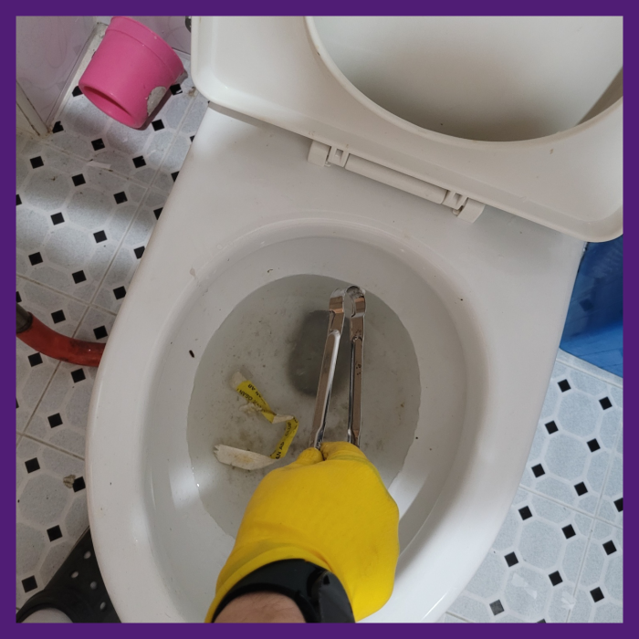
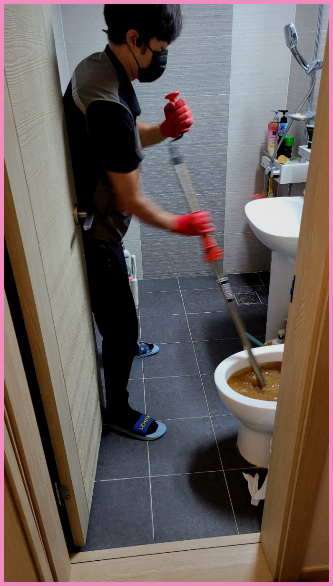
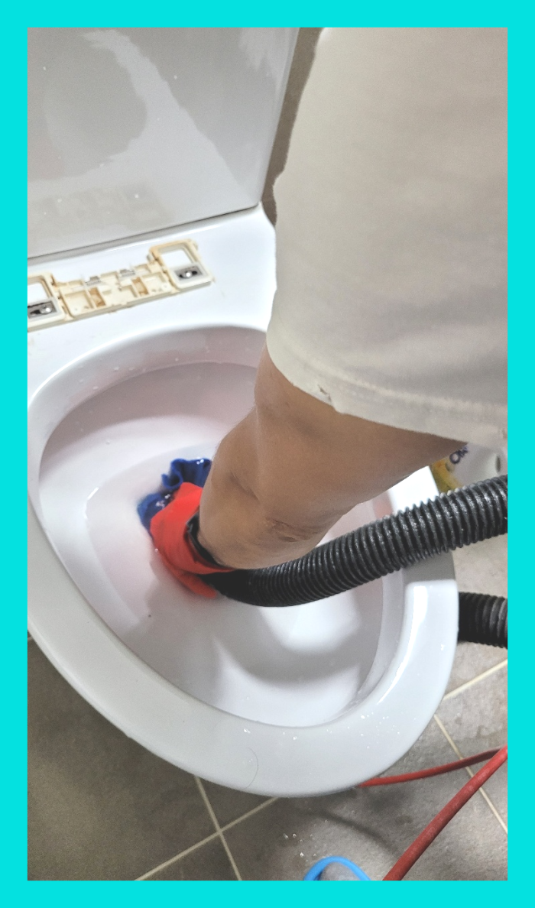
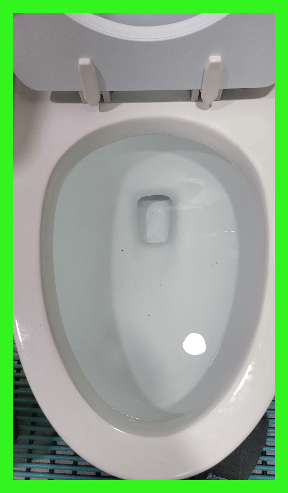
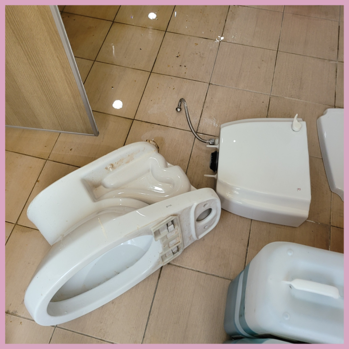
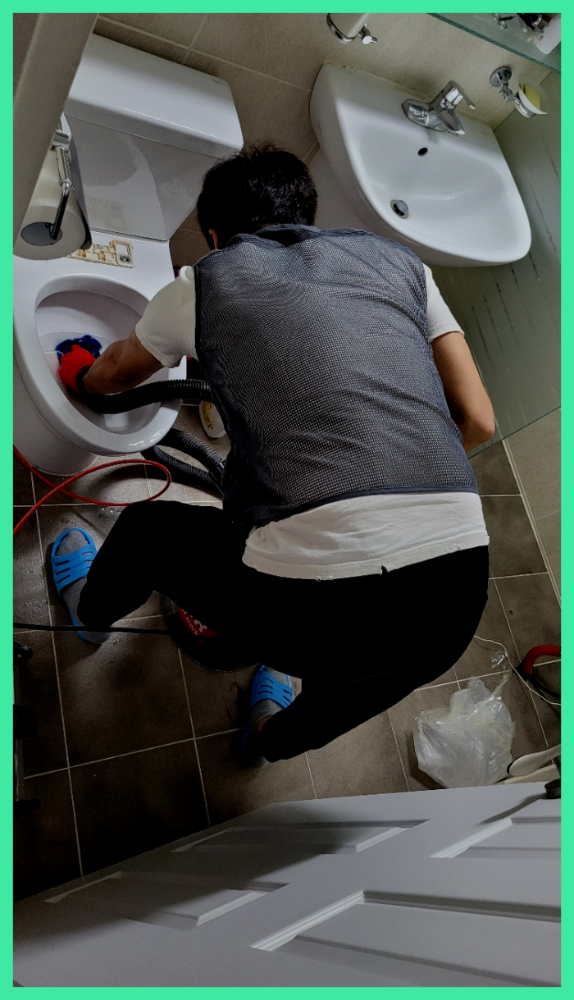

🏠 광주 쌍령동 대변기막힘 경안동 송정동 변기부속 수리 교체 설비
광주 쌍령동 싱크대막힘 전문 시공 후기

📋 작업 개요
- 위치: 광주 쌍령동, 쌍령동, 광주
- 서비스 유형: 싱크대막힘, 변기막힘, 하수구막힘, 배관막힘, 누수수리, 역류해결, 뚫는업체, 배관청소
- 작업 일시: 2024. 2. 18. 21:07
- 업체명: 하수구수사대 (010-5615-2118)
🔍 문제 상황
안녕하세요^^
설비전문업체 "하수구수사대"를 찾아주셔서 감사합니다^^
배수관를 오래 사용하신다면 이물질도 그만큼 오랜시간 누적면서 때론 막힘및 역류가 발생하기도 한답니다.
고객님은 메인과 작업이 가능한 전문설비업체를 찾아보셨다고 하는데요. 저희는 그런 배수구업체이면서 최신 전문 장비도 보유하고 오랜 경력으로 노하우와 실력이 보장되어 있어서 더 믿음이 갔다고 해요. 그렇다면 저희를 믿어주신 만큼 결과로 보답해 드려야겠지요?
광주 쌍령동 대변기막힘 경안동 송정동 변기부속 수리 교체 설비
🔎 원인 분석
💡 전문가 진단: 광주 쌍령동 대변기막힘 경안동 송정동 변기부속 수리 교체 설비
내시경카메라로 막힌 위치와 원인이 무엇인지에 대해 확인이 가능합니다. 우리 몸이 어딘가 불편할때 곧바로 이유를 찾는 것처럼 퇴수구 배관도 비슷하며 이런 식으로 검사와 진단부터 하고 시공을해야 막힌 곳을 한번에 뚫을수 있답니다.
평소에 대충 보지 마시고 주의깊게 살피셔야지만 누수까지 되는참사를 막을 수가 있어요. 전조 증상이 있을 때 제대로 안잡으면 더욱 큰일이 발생하니 대안을 준비해야 해요. 배수배관으로 내려가는 찌꺼기가 예상하지 못한 일이 발생되기에 양념을 그대로 버리고 계셨다면 앞으로는 어느 정도는 키친타올로 닦아내고 씻어야하며 쓰고 난 후에는 찌꺼기들 또한 바로바로 버리시는 것이 좋은 예방법이에요
하수막힘을 해결하기 위해 석션기를 빼고 일단 변기 안쪽으로 플렉스샤프트기를 이용하여 단단한 돌덩이 같은 이물질을 부수는 작업을 실행하였는데 생각보다 잘 안 부서져서 여러 차례 전용장비를 작동하여 단단한 이물질을 부순 뒤 다른 전용장비를 투입하여 이물질을 조금씩 빨아들였습니다.
이 장비는 비교적으로 약한 전문기계이긴 하지만 시메트처럼 굳은것을 긁어서 해결하는데에는 필수라고 할 수 있습니다. 직접적으로 이물질 분쇄 작업으로 해주는 전문기계가 있으며 입구부분부터 깊숙하게 있는 이물질보다는 일단 조금은 약한 부분부터 살살 긁으면서 내려갈 구멍을 만들었습니다.
여러번 강조 드리고 싶은 부분은 스스로 시도하시는것도 좋지만 제대로 된 책임감 넘치는 곳으로 알아보셔야 해요. 하수관막힘 진단해 보고 쉬운 현장인지 실력자가 아니면 알기가 쉽지 않답니다. 급하다고 해서 무리하게 시도해버리면 더욱 나빠질수 있어요.
다행히도 추가로 하수도문제가 생길 것을 염려하신 고객님이 더 이상 물을 사용하지 않으시고 바로 저희에게 문의하셔서 사태가 심각해지지 않았습니다. 하수도내부를 살펴보기 위해서 전용장비를 투입하고 싶었지만, 물이 고여있는 상태였기 때문에 흡입기로 입구 부분의 오물을 빨아드린 과정을 먼저 진행하고 하수도배관의 상태를 체크했습니다.

🔧 작업 과정
일단 고여있는 물들을 약간 퍼내고 난 뒤, 바로 하수로 내시경 카메라를 삽입하였습니다. 내시경 카메라는 하수는 물론이고 세면대 배관, 변기 배관, 싱크대 배관 등의 하수막힘으로 불러주시는 고객님들의 현장에서 늘 사용되는 작업 장비 중 하나입니다.
처음에 석션기를 이용해서 위에 고여있는 물을 빼주는 작업을 하였는데요 어느 정도 제거를 하고 나니까 내부를 확인해 볼 수 있는 상태가 되었습니다.배출관막힘 역류 해결 이번 현장의 경우에는 식당 내부 배관으로 흘러들어 가게 되는 이물질들이 문제가 되는 상황이었습니다.
고치시다가 해결할수없어서 어쩔수없이 배출구배관업체를 알아보시는분들이 많이있어요 문의하실때에 자세하게 체크해보셔야 별문제없이 해결할수있어요 정직한업체들을 위주로 찾아보고있으신데 여유가없는 상황이라면 저희에게 연락주시는걸 추천해요
저희 배수구 전문가 분들께선 작업에 착수하고 같은문제가 반복될가능성이 있는것을 완벽제거하는것을 최종적인 목표로하고있어요. 혹여라도 배수구 문제재발시 무료로작업하는서비스를 실시하고있어요
연락하신곳이 결점이있다면 배관 뚫지도않고 손을놔버리거나 재발의가능성이있는채로 돌아가게됩니다. 선택하셔야할때 견적가도 확인해야하는데요.대부분의의뢰자는 비교적싼곳에 마음이가실겁니다.
분쇄장비는 빠르게회전해서 벽에딱붙어있는 이물질들을 부셔주는데요.강력하게회전하는 기계이기때문에 잘못사용하면 하수도가 손상되는경우도 있으므로 조심해야돼요.이전에 작업한곳은 해결할수있다고해서 의뢰했으나 대강해결만한후 하수도들을엉망진창으로 만들고서는 그냥철수해서 수습할수없는 상태였습니다.
그러므로 재발 방지를 위하여 이를 반드시 제거해 주어야 합니다. 하수도배관 상태를 파악하기 위해 싱크대 물을 틀어보았습니다. 이렇게 물을 틀어서 확인해야 싱크대가 뚫어진 것이 맞는지 이상은 없는지 파악할 수 있습니다. 그 후 체크를 위하여 하수도배관 내시경을 보니 아래에 남은 이물질 없이 깨끗하게 제거된 배관을 볼 수 있었습니다.
중요한 것은 신뢰할 수 있는 배수관업체를 선택하는 것이며, 비용을 투자하여 문제를 해결하는 것은 더 큰 문제를 방지하는 데 도움이 된다는 것입니다. 또한, 실수나 잘못된 조치로 인해 문제가 악화되지 않도록 조심해야 합니다. 배수관배관에 머리카락 거름망을 사용하여 머리카락이 하수구에 들어가지 않도록 주의를 기울이는 것도 중요한 방법 중 하나입니다.


✅ 작업 완료
이른 아침 출동으로 오랜 시간이 걸리지 않고 고객님 댁의 문제를 시원하게 해결해 드렸습니다. 이렇게 출발이 좋은 하루는 더욱 저희 업체를 찾아주시는 고객님이 많은 하루인 것 같습니다. 배관막힘은 물론이고 싱크대막힘, 변기막힘 등의 원인으로 골머리를 앓고 계시다면? 더는 걱정하지 마시고 배관전문 장비를 보유한 전문적인 업체를 꼭 부르시길 바랍니다.
제아무리 좋은 장비를 갖췄더라도 노하우 없이는 말짱 도루묵입니다. 하수관 일을하는 초심자는 심도 있는 일을 할 때 분명 한계점에 도달하여 이따금씩 포기하기도 합니다.
#하수구막힘 #하수구뚫음 #하수구역류 #씽크대막힘 #싱크대역류 #오수관막힘 #하수구청소 #욕실하수구막힘 #변기막힘 #하수구뚫는비용 #싱크대수리 #화장실막힘




⚠️ 베란다 누수 및 방수 관리 방법
- ✅ 비가 많이 올 때 창틀 주변이나 아래층 천장에 얼룩이 생기는지 정기적으로 확인해 보세요.
- ✅ 우수관 주변 실리콘 마감이 들뜨거나 깨진 틈새가 있는지 손상 여부를 수시로 체크하세요.
- ✅ 베란다 바닥 타일의 줄눈(메지)이 소실되면 그 틈으로 물이 침투하여 누수가 유발됩니다.
- ✅ 누수 의심 증상 발견 시 방치하면 아래층 손실이 커지므로 즉시 전문가의 진단을 받으십시오.
💡 핵심 정리
- 확실한 장비 작업(내시경 점검 및 샤프트 스케일링)으로 원인을 뿌리 뽑습니다.
- 작업 후 1년 이내에 동일한 부위 재발 시 100% 무상 A/S 서비스를 보장합니다.
- 서울 · 경기 · 인천 전 지역에 24시간 언제든 긴급 출동할 수 있도록 항시 대기 중입니다.
❓ 자주 묻는 질문 (FAQ)
🚨 광주 쌍령동 싱크대막힘 문제로 고민이신가요?
정확한 원인 진단과 확실한 시공으로 재발 없는 해결을 약속드립니다.
24시간 긴급 출동 | 서울 · 경기 · 인천 전지역 | 1년 내 재발 시 무상 A/S